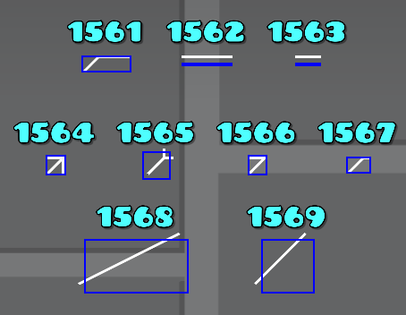
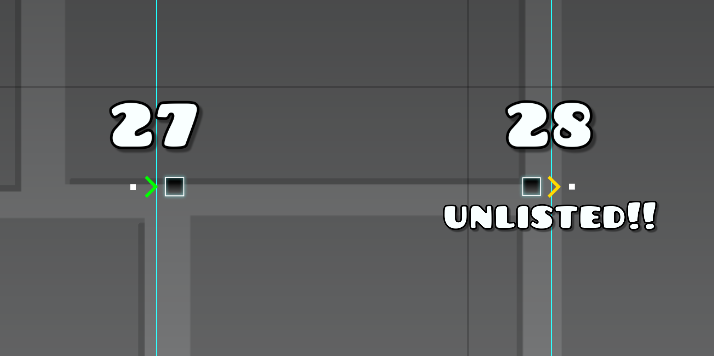
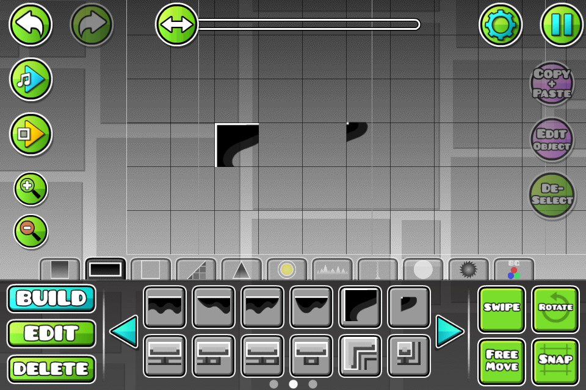
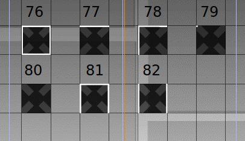
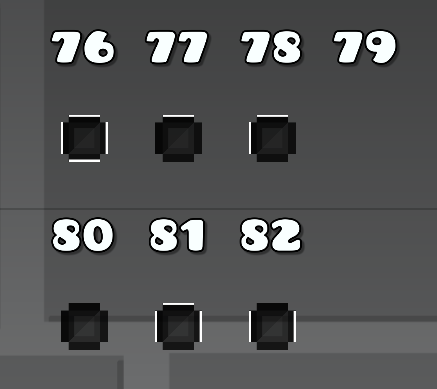
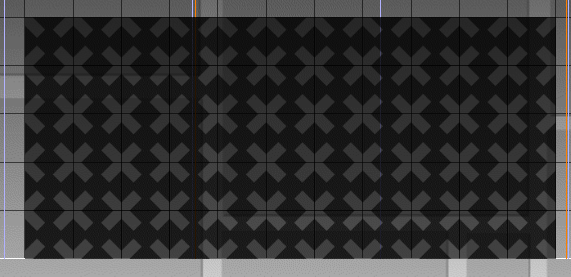
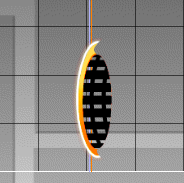
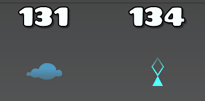
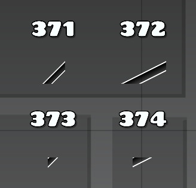

GD levels consist of objects. And internally, each of these objects have their own IDs. It might seem simple: the object IDs are incremental and their amount increases with each version. While both of these statements are true, the Geometry Dash object ID rabbit hole goes so much deeper than that. This document intends to describe all of the oddities relating to Geometry Dash objects.
Let's start with the basics. Object IDs are incremental and they start with the default block with the ID of 1, and end all the way with the 2.2 floppy disc collectible with the ID of 4539.
But obviously, not all of them were added right in 1.0. So let's see what was the last object ID in every version.
| Version | Last visible object ID | Last object ID | Object info and notes |
|---|---|---|---|
| 1.00 | 41 | 44* (43) | ID 41 is the long chain, ID 43 is the old BG Effect OFF trigger and no longer exists since 2.0, ID 44 is the practice mode checkpoint |
| 1.02 | 41 | 46 | ID 46 is the blue mirror portal, although it was hidden in this version |
| 1.1 | 46 | 46 | |
| 1.11 | 46 | 47 | ID 47 is the ball portal, although it was hidden in this version |
| 1.2 | 47 | 47 | |
| Lite 1.30 | 66 | 66 | |
| 1.3 | 84 | 84 | |
| 1.4 | 104 | 105 | ID 104 is the Line color trigger and ID 105 is the Obj color trigger (which was removed in 2.0) |
| 1.51 | 141 | 141 | This is the pink orb |
| 1.6 | 199 | 199 | |
| 1.7 | 285 | 285 | |
| 1.80 | 505 | 505 | |
| 1.93 | 744 | 744 | |
| 2.00 | 1329 | 1329 | This is the user coin |
| 2.11 | 1911 | 1911 | |
| 2.2 SubZero Leak (2017) | 1932 | 1932 | This is the Player Control trigger |
| 2.2 World Leak (2019) | 2863 | 2863 | |
| 2.2 SubZero Leak (2022) | 3024 | 3024 | |
| 2.2 | 4539 | 4539 |
Object IDs 37 and 44 DO exist, but they can't be placed in the level by themselves. ID 37 is the thing on top of the pulsing rod, and ID 44 is the practice mode checkpoint.
Although, if you think there are 4539 different objects in the game, you are sorely mistaken. There's a lot of object IDs that are not in 2.2, and a lot of them have not been used in any version for unknown reasons. Here's a list of them and the version they would be added in:
| Version | Missing object IDs |
|---|---|
| 1.00 | 14, 38 |
| 1.4 | 100, 102 |
| 1.5 | 108, 109 |
| 1.6 | 189 |
| 1.7 | 214, 262, 276 |
| 1.8 | 288, 290, 292, 293, 298, 300, 302, 303, 304, 306, 308, 310, 312, 313, 314, 316, 318, 319, 320, 322, 330, 332, 334, 335, 336, 338, 340, 341, 342, 344, 346, 347, 348, 350, 352, 354, 356, 357, 359, 360, 361, 362, 379, 380, 381, 382, 383, 384, 385, 386, 387, 388, 389, 390, 391, 400, 401, 402, 403, 404, 415, 416, 417, 418, 445 |
| 2.0 | 746, 748, 750, 751, 760, 761, 776, 777, 778, 779, 780, 781, 782, 783, 784, 785, 786, 787, 788, 789, 790, 791, 792, 793, 794, 795, 796, 797, 798, 799, 800, 801, 802, 803, 804, 805, 806, 834, 835, 836, 837, 838, 839, 840, 849, 851, 852, 858, 860, 864, 865, 866, 875, 876, 879, 892, 897, 898, 912, 913, 922, 962, 963, 978, 979, 993, 994, 995, 996, 1008, 1023, 1072, 1073, 1074, 1119, 1121, 1128, 1129, 1130, 1131, 1211, 1212, 1213, 1214, 1215, 1216, 1217, 1218, 1219, 1321, 1323, 1324 |
| 2.1 | 1335, 1336, 1337, 1396, 1397, 1398, 1399, 1400, 1401, 1402, 1403, 1404, 1405, 1406, 1407, 1408, 1409, 1410, 1411, 1412, 1413, 1414, 1415, 1416, 1417, 1418, 1419, 1420, 1421, 1422, 1423, 1424, 1425, 1426, 1427, 1428, 1429, 1430, 1465, 1466, 1467, 1468, 1469, 1470, 1474, 1475, 1476, 1477, 1478, 1479, 1480, 1481, 1482, 1483, 1484, 1485, 1486, 1487, 1488, 1489, 1490, 1491, 1492, 1493, 1494, 1495, 1497, 1498, 1499, 1500, 1501, 1502, 1503, 1504, 1505, 1506, 1508, 1509, 1541, 1542, 1543, 1544, 1545, 1546, 1547, 1548, 1549, 1550, 1551, 1570, 1571, 1572, 1573, 1574, 1575, 1576, 1577, 1578, 1579, 1580, 1581, 1822 |
| 2.2 SubZero Leak (2017) | 1918, 1929, 1930 |
| 2.2 World Leak (2019) | 2056, 2057, 2058, 2059, 2060, 2061, 2705, 2706, 2707, 2774, 2775 |
| 2.2 SubZero Leak (2022) | 2906, 2908, 2918, 3003 |
| 2.2 | 3025, 3026, 3028, 3098, 3099, 3100, 3616, 3644, 3663, 3664, 3665, 3666, 3667, 3668, 3669, 3670, 3671, 3672, 3673, 3674, 3675, 3676, 3677, 3678, 3679, 3680, 3681, 3682, 3683, 3684, 3685, 3686, 3687, 3688, 3689, 3690, 3691, 3692, 3693, 3694, 3695, 3696, 3697, 3698, 3699, 4400 |
That makes for a grand total of 335 skipped object IDs, 65 of which are from 1.8, 92 from 2.0, 105 from 2.1, 65 from 2.2, and the remaining 10 are from earlier versions.
This is where the rabbit hole begins. Out of all 4539 object IDs, there are 479 that have either been hidden at one point, or did not exist at one point after already being added in a previous version.
479 is a lot of object IDs, but there are large groups of objects where their history follows the same template. I will go over them now to avoid redundancy when listing out the object IDs one by one.
There are some objects in GD that are black by default, which is done using the color ID 1010. However, in 2.1, RobTop decided to add the option of changing the color of black saws, ground spikes, slabs and fake spikes. However, adding this functionality to the old objects would cause some older levels to have broken colors, so he decided to create new objects and unlist the older ones. Below is yet another table that documents the object IDs affected by this.
| Old object ID | New object ID | Old object version |
|---|---|---|
| 9 | 1715 | 1.00 |
| 40 | 1903 | 1.00 |
| 63 | 1719 | 1.3/Lite 1.30 |
| 88 | 1705 | 1.4 |
| 89 | 1706 | 1.4 |
| 98 | 1707 | 1.4 |
| 191 | 1889 | 1.6 |
| 195 | 1910 | 1.6 |
| 196 | 1911 | 1.6 |
| 198 | 1890 | 1.6 |
| 199 | 1891 | 1.6 |
| 243 | 1720 | 1.7 |
| 244 | 1721 | 1.7 |
| 363 | 1717 | 1.8 |
| 364 | 1718 | 1.8 |
| 365 | 1716 | 1.8 |
| 366 | 1723 | 1.8 |
| 367 | 1724 | 1.8 |
| 368 | 1722 | 1.8 |
| 369 | 1904 | 1.8 |
| 370 | 1905 | 1.8 |
| 393 | 1892 | 1.8 |
| 397 | 1708 | 1.8 |
| 398 | 1709 | 1.8 |
| 399 | 1710 | 1.8 |
| 421 | 1725 | 1.8 |
| 422 | 1726 | 1.8 |
| 446 | 1728 | 1.8 |
| 447 | 1729 | 1.8 |
| 667 | 1730 | 1.9 |
| 675 | 1734 | 1.9 |
| 676 | 1735 | 1.9 |
| 677 | 1736 | 1.9 |
| 720 | 1731 | 1.9 |
| 768 | 1727 | 2.0 |
| 989 | 1732 | 2.0 |
| 991 | 1733 | 2.0 |
Most slopes with outlines got unlisted in 2.1, although a few got listed as a new object. The only difference between the 2 objects I could find is the (visually) slightly longer outline. Here's a table of these slopes:
| Old object ID | New object ID |
|---|---|
| 289 | 1743 |
| 291 | 1744 |
| 299 | 1745 |
| 301 | 1746 |
| 309 | 1747 |
| 311 | 1748 |
| 315 | 1749 |
| 317 | 1750 |
| 665 | 1338 |
| 666 | 1339 |
The slopes with ID 349 and 351 got relisted in 2.2 (starting with the SubZero 2022 leak), probably because of Nine Circles levels. They are 2 of the 3 objects that have ever been unlisted and then relisted again. The other object is covered later in this document.
Here are the unlisted slopes: 321, 323, 331, 333, 337, 339, 343, 345, 349, 351, 353, 355, 483, 484, 492, 493, 651, 652, 709, 710, 711, 712, 726, 727, 728, 729, 886, 887
In 2.0, object IDs 160-169, 193, 737 and in 2.1, objects IDs 247-254 were unlisted and their versions without outlines were listed instead (for 160-169 + 193, they start at 1140, meanwhile for 247-254, they start at 1820 (but 1822 doesn't exist)). However, object IDs 164, 193 and 251 did not even have an outline, but were replaced anyway with what is an identical object, just with a different object ID. So when making a level backporter, one should replace ID 1142, 1148, 1825 and 1149 with 164, 193, 251 and 737 respectively.
All the way from 1.0 up to 2.0, there were new color triggers added that in 2.1 were merged into the color trigger (which was added in 2.0). And in 2.2, their sprites got removed and changed to the Color trigger sprite. Final table of the document, I promise:
| Object ID | Color name & ID | Redirect ID (if the object was removed in 2.0) |
|---|---|---|
| 29 | BG (1000) | |
| 30 | Ground (1001) | |
| 104 | Line (1002) | 915 |
| 105 | Obj (1004) | |
| 221 | Col-1 (1) | 899 |
| 717 | Col-2 (2) | 899 |
| 718 | Col-3 (3) | 899 |
| 743 | Col-4 (4) | 899 |
| 744 | 3DL (1003) | |
| 900 | Grnd 2 (1009) | |
| 915 | Line (1002) |
For some reason, IDs 1561-1569 are 3DL outlines that have rather strange hitboxes. The reasoning for their inclusion is unknown.
This is the transition trigger that scales blocks from big to small, the inverse of ID 27. However, this trigger was unlisted from 1.00 to 1.2. And since 1.3 (Lite 1.30), it has been listed.
Perhaps one of the most well-known hidden objects, the Start Pos with a hitbox has been widely known about since 2.0. Although, before 2.0, it used to be the Level End trigger, however it didn't do anything. Allegedly, this object was used as the ending wall prior to 2.0.
This is the Practice Mode checkpoint. It can't be placed by itself in levels, but is still an object nonetheless.
These are the BG Effect ON and BG Effect OFF triggers respectively. Much like the Level End trigger, they seemingly didn't do anything and were removed in 2.0.
This is the pulsing dot above the 1.0 rods, and it's the same story as with the practice mode checkpoint.
45-46 are the mirror portals and 47 is the ball portal. As mentioned above, 45-46 were added in 1.02 (although unlisted) and then listed in 1.1, same story with 47 (except that it was added in 1.11 and listed in 1.2). What's interesting is that the 1.11 ball had entirely different physics compared to the 1.2 ball. There may or may not be an article on this in the future.
This is the other well-known secret object, the transition trigger that makes everything go crazy. It was also solid and tangible prior to 2.2, but in 2.2 it has been relisted and given the properties of any other trigger, and so levels that used it may or may not be broken now.
These 2 objects have a weird history, in fact, they have even been acknowledged publicly by RobTop himself, with an image called bugobjects.png on boomlings.com. In Lite 1.3, they were listed in the editor. Between 1.3 and 1.7, they were unlisted. Between 1.6 and 1.7, they didn't have a texture for some reason. In 1.8-1.81, the objects were relisted in the editor, but they crashed the game (unless you turned on LDM), but it was fixed in 1.811. The reason they crashed the game is because of the missing glow textures.
This is a set of blocks first made usable in 1.4, but they actually existed since 1.3, although their design was very different and there was even a corner block that was removed when the design got changed. The design formed a rather nice pattern, so I'm not sure why RobTop just didn't let us have both designs.
  This object uses the UFO portal's back texture, and also has a hitbox that roughly matches up with the texture. And yes, the ID for the UFO portal is 111, but I'm not sure ID 112 is ever used in the code besides just being registered as an object. The object was removed in 2.0.
These 2 objects are the small cloud and the diamond rod. Hidden in 1.50-1.51, but listed in the editor since 1.6. I'm not sure why they weren't just listed outright, since they had the exact same textures in 1.5 and everything.
Now, this one is the secret coin used in official levels. In 1.6, despite being hidden, you could place this object in any level by editing the level data, and by setting its property of 11 to a unique number for each coin, you could essentially make a free secret coin level and it would actually add them to your stats. And as you probably know, this had been done back then and widely used before being patched. So ever since 1.7, the object is hardcoded to be removed when playing any non-official level. And ever since 2.0, the object doesn't even show up in the editor.
These slopes and their corners were added in 1.8, but were only listed in the editor in 2.1. They also worked perfectly fine.
These small grass decorations that look straight out of 2.0 were actually added in 1.8, just unlisted until 2.0. Why? We may never know. 414 was only added in 2.0, and didn't exist before.

This block set was added in 1.8 (unlisted) and removed in 2.0, but they were re-added (besides the blocks with outlines).

These are the same bushes as 123-128 (added in 1.5), the only difference being their default color not being the primary player color, but the color channel of 1. They were added in 1.8 and unlisted in 1.9, as you can now just recolor the player color ones.

This one has been added in 1.9 and hidden since 1.9. It looks very similar to the dot added in 2.1, but you may notice that it's slightly larger. That's because it's actually using a different texture, those being the insides of IDs 453-457. The default Z Layer & Order of 725 is B2 and -6, meanwhile for 1764, it's B1 and -5. But then for the IDs of 453-457, it's B1 and 9... Weird.


This is the orange teleport portal. It's used as part of the actual teleport portal, whihc is ID 747. It can't be saved as a custom object and it will be removed when placed in a level.
We're finally at the 2.2 objects. This is the old End trigger, used in the old versions of SubZero levels. This trigger functioned differently than the current End trigger, with this one spawning the end wall instead of just pulling the player into itself. It's still present in 2.2 and interestingly, the menu and the info text for it are different from the actual End trigger. Here they are in comparsion:
Old